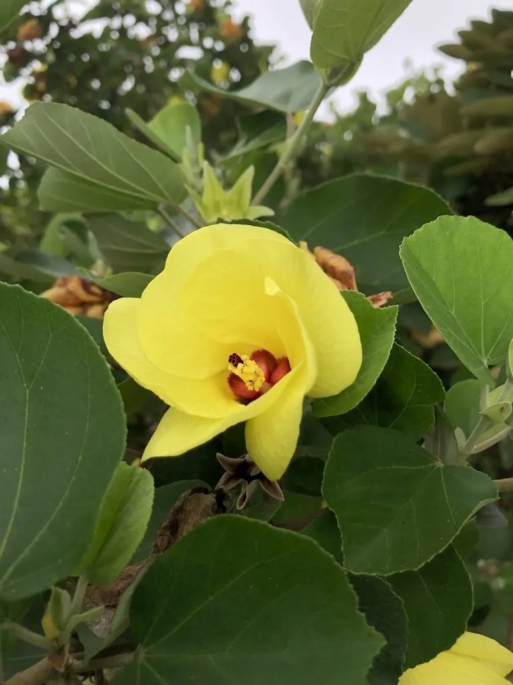

灌木与花木 · 植物界
海滨木槿 Hibiscus hamabo

锦葵科木槿属落叶灌木，花淡黄色、花心暗红，耐盐碱抗海风，是浙江沿海沙地和海涂绿化的优良树种。
- 分类
- 门被子植物门纲木兰纲目锦葵目科锦葵科属木槿属
- 栖息环境
- 海岸沙地、盐碱地与潮间带上缘，极耐盐碱、抗海风
- 地理分布
- 中国浙江、江苏沿海；日本、朝鲜半岛海岸
- 保护级别
- 暂无评估；野生种群受沿海开发影响，部分地区加以保护
物种志
海滨木槿为锦葵科木槿属落叶灌木，高一至三米，树皮灰褐色，嫩枝被星状毛。叶片互生，近圆形至宽卵形，边缘具细锯齿，表面粗糙，背面被灰白色绒毛。花单生于叶腋，花冠淡黄色，花瓣五枚，花心暗红色，花期六至九月；蒴果卵圆形，成熟时褐色开裂，果期九至十一月。
海滨木槿分布于中国浙江、江苏沿海以及日本、朝鲜半岛的海岸，多生于海边沙地、盐碱地和潮间带上缘。它极耐盐碱、抗海风，耐旱也耐短期水淹，适宜疏松的砂质土壤。花淡黄、花心暗红，夏季开放，是沿海地区少有的观花灌木；树皮纤维可制绳和造纸。由于能固沙护堤、改良盐碱地，海滨木槿被视为海岸防护林和滨海湿地修复的优良树种。
形态与习性
- 株高1–3 m，嫩枝被星状毛
- 花期6–9 月，花淡黄色
- 果期9–11 月，蒴果褐色
- 光照极喜光，全日照生长好
- 水分耐旱，也耐短期水淹
- 土壤滨海砂质盐碱土
- 主要用途海岸防护、盐碱地绿化
趣味知识
- 海滨木槿能忍受海水浸泡和盐碱侵蚀，是海岸防风固沙的先锋灌木。
- 它的花淡黄色、花心暗红，在盛夏少花的滨海地带格外醒目。
- 浙江沿海曾有大规模野生海滨木槿群落，是研究耐盐植物的宝贵材料。